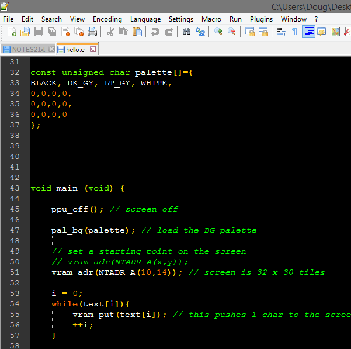
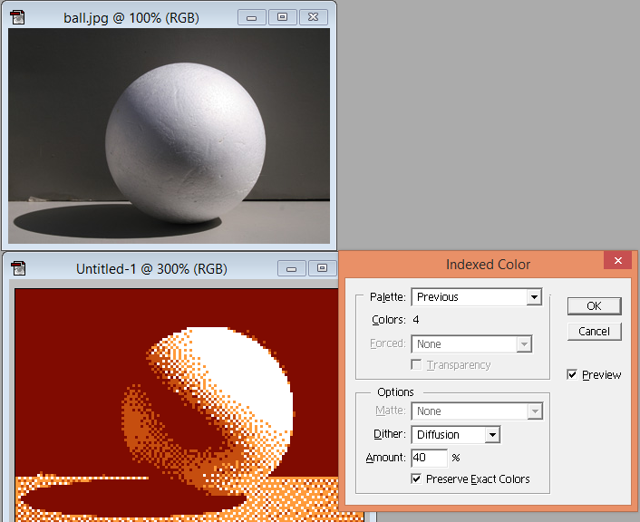
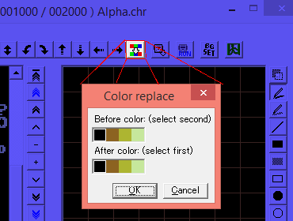

准备工作
这是你编写NES游戏所需要的
1.汇编程序（或编译器）
2.贴图编辑器
3.Photoshop或GIMP（或类似）
4.Notepad++（或类似）
5.一个好的NES模拟器
6.一个贴图地图程序
7.python3（可选，我用了它）
我使用CC65制作了我的例子。他是6502（即NES）编程的最佳编译器/汇编程序之一。虽然，学习路线有点曲折，但我会帮助你入门。
查看版本的命令
cc65 --version
注意：我使用的版本是V2.15 (备注：这时候可以下载的是2.17版本)
使用不同版本的cc65的文件有时会给出错误消息（特别是很多旧版本的cc65可能连编译都无法完成）
其次，您需要一个贴图编辑器来创建图形。我个人更喜欢YY-CHR。你可以在这里得到它…
http://www.romhacking.net/utilities/119/
我更喜欢先在GIMP/Photoshop中将图片转换为4色图，然后复制/粘贴到YY-CHR中。有许多免费软件程序可以执行相同的操作。
Notepad++ 是一种编写编程代码的工具。如果您愿意，甚至可以使用notepad或其他程序。Notepad ++在这里可用...
https://notepad-plus-plus.org/download/
Notepad++ 的优点是你可以设置语法高亮显示代码，这样便于阅读。它的左边是行号。如果在编译时收到错误消息，它将告诉您错误行。如果双击某个单词，它将突出显示该单词的每个实例。它有查找和替换功能，我经常使用，也可以在文件中查找整个文件夹的文件中的单词。

或者，我听说有人使用VS编写他们的C代码。这个很高级，他可以进行语法错误检查和代码自动填充，这是notepad++ 无法做到的。
接下来是NES模拟器。我90％的时间使用的是FCEUX，因为它有出色的调试工具，PPU查看器，Nametable查看器，十六进制编辑器等。但是，它并不是最准确的模拟器。您需要在多个模拟器上测试您的游戏，以确保其他人能够玩您的游戏。（我使用过Nintendulator，Nestopia和Mesen）。Mesen还有很好的调试工具。
FCEUX在这里......
http://www.fceux.com/web/download.html
*在这里您可以获得自定义调色板 - FirebrandX一直致力于制作更好的NES调色板。FCEUX的默认调色板有什么问题？太亮和太饱和 - 不准确到实际NES上的样子。（FCEUX /配置/调色板/装载调色板）。
http://www.firebrandx.com/nespalette.html
我没有看到我提到的确切调色板，但我认为这是一个......
http://dl.dropboxusercontent.com/s/y3yeaqc87dnhqel/FBX-NES-Unsaturated.pal
您可能希望更改像素显示以显示每个像素。我见过有人说“NES是256×224像素”，但事实并非如此。较旧的电视往往会从图片的顶部/底部切掉几个像素，但NES会产生240像素的高亮度。我的一台电视显示几乎整个240像素。您应该假设某些用户会看到整个图片，因此在FCEUX中转到配置/视频/绘图区域，并将输出设置为完整0到239.电视也没有方形像素，所以我设置了方面比例为9/8。
然后，我们需要一个瓦片安排程序。我们可以在没有它的情况下制作游戏，但它肯定会有所帮助。由于我们正在开发NES游戏，我强烈推荐NES Screen Tool。它非常好地显示了NES的颜色限制，并且有利于制作单屏幕游戏。它还为您提供了名称地址和属性表地址，这些都很方便。我使用2.3，如果您有旧版本，它将不会在我的源代码中打开.nss文件。在这里得到它......
https://shiru.untergrund.net/software.shtml
而且，如果你正在制作滚动游戏，我也会选择Tiled地图编辑器。稍后我将详细介绍，但您可以从Tiled导出的.csv文件中创建数据数组。
现在已经完成了......这些事情如何运作？
Photoshop - 准备文件去YY-CHR。首先，调整到一些合理的NES大小，这里我使用128 x 128像素（使用最近邻居进行大小调整）。然后减少到4种颜色，按图像/模式/索引...调色板：自定义，减少到4种颜色。（我制作了一个自定义的4色样本集，可以在这里加载。）您可能需要使用铅笔工具修饰图像。剪切并粘贴到YY-CHR中。

YY-CHR - 确保它设置在2bpp（NES）上。如果颜色索引错误，您可能必须在YY-CHR中使用颜色替换工具...

您在此可以随意设置调色板，YY-CHR可以显示各种颜色，但不能保存调色板结果。您必须将调色板编程到游戏中。
您可以将chr文件加载到NES Screen Tool中，并使用此工具以CC65可以理解且neslib可以使用的格式创建背景、调色板和精灵。
最新版本的NES Screen Tool还可以将图形（BMP索引为16色）作为tileset导入，或者将其作为名称表导入（自动生成切片）。Kasumi比我更好地解释了这个过程，这里......
http://nesmakers.com/viewtopic.php?t=189
还有一件事。我一直在编写简单的python3脚本将一些数据处理成C数组。如果您安装了python3，使用我的教程文件可能会有所帮助。
https://www.python.org/downloads/
下一节我们讲解CC65